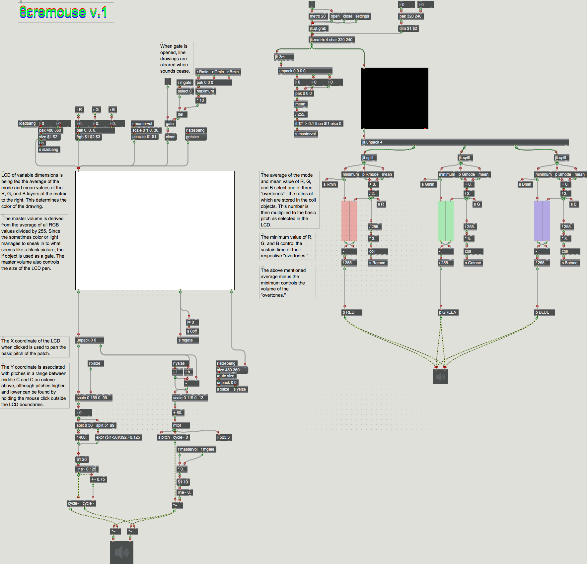

Fraction is an app built in Max/MSP/Jitter that takes images and churns them into three part polyphony.
It takes still images and reads them pixel-column by column and then when it has reached the last column loops back to the first.
The column is broken into three vertical ranges which control separate sound generators, all in different octaves.
The pitch of each voice is determined by the y-value of the darkest pixel in the range.
The dynamic of each voice is determined by the average darkness of the range.
View source on Github.
The following is an abridged recording of a performance using the Fraction app.
The piece follows an arc form: starting from nothing, the texture gradually thickens as more marks are made on the page.
Then white paint is applied and the piece returns to silence.
The theramouse is an app in two parts. The first part analyzes live camera data for the most prevalent color in the feed. This color determines which overtones will be allowed to be played in the next part. The second part of the app is a basic sound drawing tablet, where the user can draw pitches, the higher on the tablet the higher the pitch and vice versa. Dragging left and right on the tablet pans the sound. Essentially, the theramouse is a light theremin. View source on Github.
